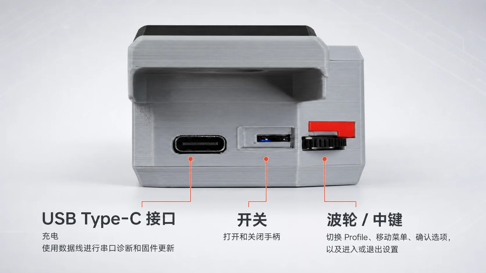
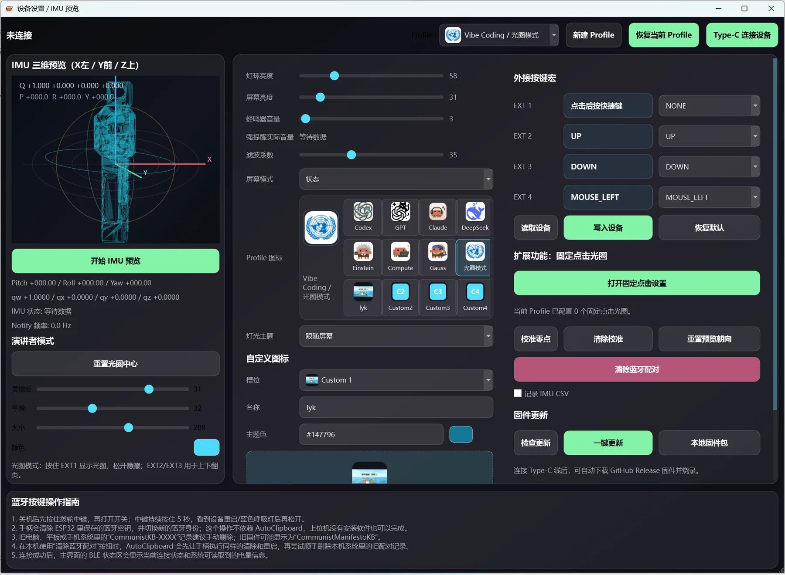

实体宏键确认 / 取消 / 发送 / 自定义
PLAYER LOADOUT ZKO AI CODING HANDLE
装备你的
AI 工作流
实体宏键、Agent 状态灯、彩色小屏、三主机蓝牙与 AutoClipboard 软件协同，一套交付。它不是桌面摆件，而是给大模型工作流准备的实体控制台。
STATUSSMALL BATCH
DEFAULT灰色交付
CUSTOM其他颜色预订
价格与库存以闲鱼商品页为准；产品处于小批量持续迭代阶段。

Agent 状态灯环 + 彩色小屏
三主机蓝牙快速切换工作设备
Agent Skill一句话安装与配置
ITEM CODEX PRODUCT GALLERY
每一个动作，
都有明确落点。
从 Type-C 接口、侧面宏键到正面状态区，产品图鉴保留真实结构和现有功能说明，不用概念图掩盖实际交付。



COLOR SELECT PREORDER LOADOUT
选择你的
玩家配色。
灰色为默认交付颜色。红色、白色、黑色、紫色以及其他自选颜色均仅支持提前预订；任何非灰色方案都需在闲鱼沟通并确认生产可行性。
- 默认版本
- 灰色
- 定制方式
- 购买前沟通
- 交付时间
- 按方案确认
COMMUNITY MOD TELL US YOUR BUILD
告诉我们你想要的搭配
欢迎提出手柄颜色、麦克风型号、固定方式、使用场景或其他组合建议。设计成熟、反馈良好的搭配，后续可能作为正式版本上线。
颜色组合紫色手柄 + 白色麦克风
设备型号DJI Mic / DJI Mic 2 / 其他型号
使用场景语音编程、演讲、录课或移动创作
结构建议支架方向、固定位置与握持方式
建议将在腾讯文档中查看；实际编辑与保存能力由腾讯文档权限控制。
ACCESSORY SLOT MICROPHONE COMPATIBILITY
为常用无线麦克风
保留装备位。
重点适配大疆一代与二代麦克风。麦克风属于使用场景配件，需单独购买；其他型号购买前请提供品牌、型号与外形照片。
DJI Mic 一代
可作为语音输入和移动收音设备，与手柄组合使用。实际固定方式请在购买前确认。
查看官方商品页 →DJI Mic 2 二代
支持按外形和使用方式确认适配，适合语音编程、录课和演示场景。
查看官方商品页 →其他麦克风系列
其他型号可按型号确认或定制适配件。购买前请提供品牌、型号与外形照片。
在闲鱼咨询适配 →麦克风不包含在包装内；页面中的 DJI 麦克风图片仅用于说明适配与使用场景。

FULL LOADOUT WHAT YOU GET
不止是手柄，
也是一套 AI 工作流。
- 01字库 AI 编程手柄 × 1
- 02AutoClipboard 配套软件
- 03固件、驱动与公开使用文档
- 04AI 编程工作流与 Skill 资料
- 05持续的软件和固件更新入口
产品处于小批量持续迭代阶段，外观细节、功能和交付内容以购买前沟通及实际版本为准。
PLAYER 01 // LOADOUT READY